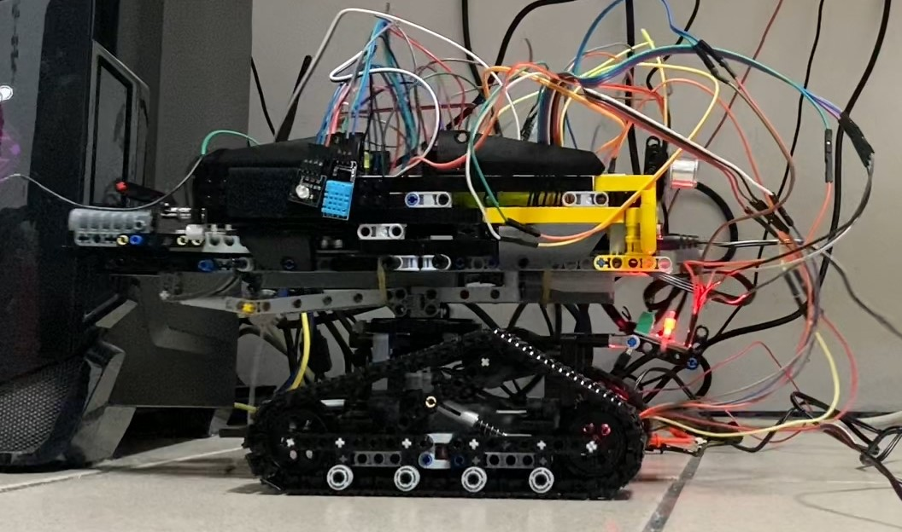
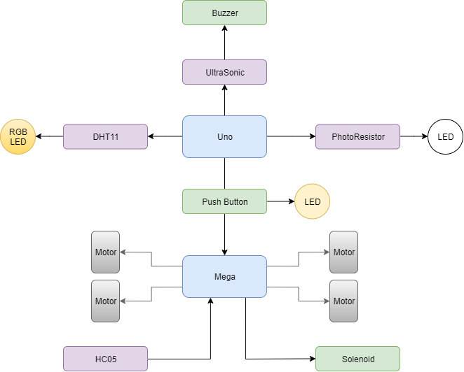

The Tank Gen2 - Arduino Based
A Lego Tank!!
Introduction
- This is a Arduino-based mobile Lego tank which can be controlled by an Android phone through Blynk
- The Tank Gen2 is the upgrade version of the Gen1 - FPGA-based one
- Since the Gen1 is rather small and not strong enough
- Gen2 has made a significantly big change compared with Gen1
- Be sure to check Gen1 if you want more details for the background stories

Feature
- It has two main structural parts
- Upper: Turrent
- Turrent can lift and turn left and right
- Turrent can fire
- Lower: Base
- Base can also turn left and right
- There are a total of 4 motors to drive the Turrent and the Base
- It has two front lights which can be manually controlled through push buttons
- It has an Ultrasonic sensor that can detect enemy upfront
- It has a Thermal sensor which can light up alarm RGB LED to certain temperature and humdity
- It has a Photon Resistor which can light up the front lights when environment is dark
- It has a Canon which can shoot Lego parts and is controlled by a solenoid
- Moving, Shooting and Lighting can be controlled by an Android Phone through Blynk
- The Tank communicates with the phone by Bluetooth through a HC05 Bluetooth Chip
Parts Used
- TO BE FILLED
- Please refer to Architecture first
Architecture

Demo
-
Development Phase 1: Base Structure
-
Development Phase 2: Phone Working
-
Development Phase 3: Torrent Moving
-
Development Phase 4: Shooting
-
Development Phase 5: Moving